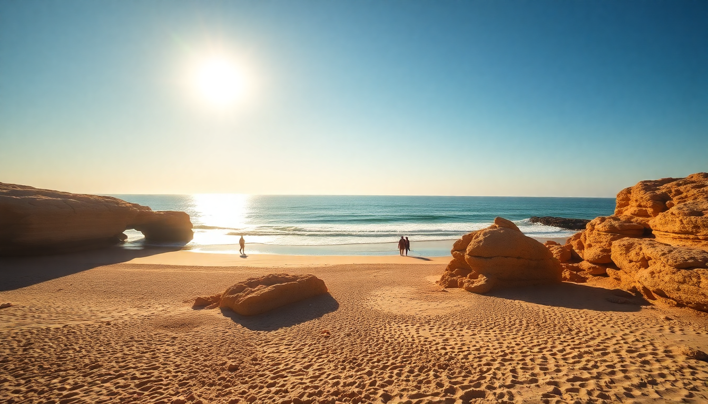

Best Beaches in Portugal: Algarve, Alentejo & Lisbon Coast

I spent three weeks driving the Portuguese coast from Faro up to Lisbon, hopping between beaches that ranged from packed tourist strips to near-empty coves. The Algarve gets all the glory, but the Alentejo coast and Lisbon region have their own quirks. Here’s what I actually found worth your time, and what you can skip.
What are the best beaches in the Algarve near Faro?
Faro itself doesn’t have a great beach — the city sits on a lagoon. You need to head to the barrier islands for sand. Ilha Deserta is exactly what it sounds like: no buildings, just dunes and ocean. The ferry from Faro’s old town takes 30 minutes. Bring water and snacks because the only restaurant, Estaminé, is overpriced and slow.
Praia de Faro is closer and easier but crowded with locals and airport noise — planes come in low overhead. I’d skip it unless you’re short on time.
For something in between, Ilha da Culatra has a small fishing village with a couple of casual seafood spots. Tasca do Zé serves grilled fish right on the sand. The ferry from Faro costs about €5 round trip.
- Ilha Deserta — empty, wild, no services. Best for solitude.
- Ilha da Culatra — working fishing village, decent lunch options.
- Praia de Faro — convenient but noisy. Good for a quick dip if you’re staying in town.
Which beaches in Lagos are worth the hype?
Lagos has the most dramatic coastline in the Algarve — golden cliffs, sea caves, and turquoise water. Praia do Camilo is the postcard beach. You climb down 200 wooden steps to a small cove with two sand strips connected by a tunnel at low tide. Arrive before 9:30 AM or after 5 PM. By noon, you’re queuing for steps.
Praia Dona Ana is wider but gets hammered by tour groups. I preferred Praia do Canavial — it’s a 15-minute walk west of the center, fewer people, and the rock formations are just as good. No lifeguards though.
For a swim with less crowd, Praia do Porto de Mós is a long stretch of sand with decent surf. The beach bar Burgau Beach Bar does a solid bifana sandwich for €6.
- Praia do Camilo — iconic, but arrive early.
- Praia do Canavial — quieter alternative with similar cliffs.
- Praia do Porto de Mós — good for swimming and casual lunch.
Is Albufeira’s beach scene overrated?
Yes and no. The main strip — Praia dos Pescadores — is a zoo in July and August. Umbrellas packed cheek-to-jowl, vendors selling sunglasses every three meters, and music blasting from beach bars. I lasted an hour.
But there are good beaches just outside town. Praia da Falésia runs for six kilometers east of Albufeira. Red-and-orange cliffs back a wide beach that never feels full. I walked for an hour and barely passed anyone. Parking at the Falésia Hotel lot costs €5 for the day.
Praia de São Rafael is smaller but has interesting rock arches. The water is calm — good for kids. The restaurant Praia São Rafael does a passable grilled sea bass, though you’re paying for the view.
- Praia dos Pescadores — skip in peak season. Overrun and loud.
- Praia da Falésia — long, quiet, stunning cliffs. Worth the drive.
- Praia de São Rafael — family-friendly, calm water.
What are the hidden beach gems on the Alentejo coast?
The Alentejo coast is where you go when you’re tired of the Algarve crowds. It’s less developed, with long stretches of empty sand and wild surf. Vila Nova de Milfontes is the main hub — a laid-back town with a castle overlooking the river. Praia do Farol is a 20-minute walk from town. Dunes, no buildings, and water that’s colder than the Algarve.
Porto Covo is smaller and even quieter. Praia da Ilha do Pessegueiro has a small island you can wade to at low tide. The sand is fine and white. There’s one basic café that sells €3 pastéis de nata.
Praia do Brejo Largo near Zambujeira do Mar is my favorite. It’s a 15-minute hike down a dirt path. No services, no shade, no crowds. I had the entire beach to myself on a Tuesday in June.
- Praia do Farol — easy walk from Vila Nova de Milfontes. Wild dunes.
- Praia da Ilha do Pessegueiro — unique wading access to an island.
- Praia do Brejo Largo — requires a hike. Rewards with solitude.
What beaches near Lisbon are worth the trip?
Lisbon’s coast has a different vibe — Atlantic swell, cooler water, and a mix of city beaches and surf breaks. Cascais is the easiest day trip. Praia da Rainha is a tiny cove right by the town center. It’s pretty but packed. Praia do Guincho is the opposite — a huge windswept beach popular with surfers and kiteboarders. The wind can be brutal, so bring a jacket even in summer.
Praia da Conceição in Cascais was my favorite: calm, less crowded, and the Mar do Inferno restaurant at the cliff edge does excellent grilled octopus.
Further south, Comporta is the trendy spot — rice fields and endless sand. Praia do Carvalhal is the main beach. It’s beautiful but expensive. The beach club Sal charges €20 for a sunbed. Skip it and lay your towel 200 meters down the sand for free.
- Praia do Guincho — windy, good for surfing. Not for lounging.
- Praia da Conceição — calm, good food nearby.
- Praia do Carvalhal — stunning but pricey beach club scene.
When is the best time to visit these beaches?
June and September are the sweet spots. Water is warm enough for swimming (18–20°C), crowds are manageable, and prices are lower than July–August. I went in late May and found the water too cold for more than a quick dip — locals were swimming, but I couldn’t stay in long.
July and August are hot (30–35°C) and packed. Book accommodation months ahead if you go then. The Algarve beaches fill by 10 AM. Alentejo beaches stay quieter because there’s less lodging nearby.
October can work if you get lucky with weather. I had a perfect 25°C day at Praia da Falésia in mid-October, but the water was 16°C — wetsuit territory.
- June and September — best balance of weather, crowds, and water temp.
- July–August — hot, crowded, expensive. Book early.
- May and October — gamble on water temperature. Good for walks, not swimming.
How do I get between these beach towns without a car?
A car is ideal, but not essential. The Algarve Line train connects Faro, Albufeira, and Lagos. From Faro, it’s about 1.5 hours to Lagos and 30 minutes to Albufeira. Trains run hourly. The station in Albufeira is Albufeira-Ferreiras — you need a bus or taxi to the beach (10 minutes, €8–10).
For the Alentejo coast, buses from Lisbon to Vila Nova de Milfontes take about 2.5 hours with Rede Expressos. Once there, you walk or bike to beaches. Bicicleta Alentejo rents bikes for €12/day.
Lisbon beaches are easy by train. Cascais Line from Cais do Sodré station gets you to Cascais in 40 minutes. Trains run every 15 minutes.
- Algarve Line train — connects Faro, Albufeira, Lagos.
- Rede Expressos bus — Lisbon to Vila Nova de Milfontes.
- Cascais Line train — Lisbon to Cascais, frequent and cheap.
FAQ
Is the water in the Algarve warm enough for swimming? Yes, from June through September. Peak water temperature hits 22–24°C in August. The Alentejo and Lisbon coasts are 2–4°C cooler. If you’re sensitive to cold, stick to the Algarve in late summer.
Which beach is best for families with kids? Praia de São Rafael near Albufeira has calm, shallow water and easy access. Praia do Porto de Mós in Lagos is also good — lifeguards, gentle waves, and beach bars nearby. Avoid the Alentejo beaches for young kids — the surf is stronger and there are no lifeguards.
Are there nude beaches in Portugal? Yes, but they’re not well marked. Praia do Salto in the Algarve near Alvor is the most established. Praia do Brejo Largo in Alentejo is unofficially clothing-optional — I saw a few people nude there. The Algarve’s Praia da Galé has a section at the far east end that’s known for it.
Conclusion
- Lagos has the most dramatic cliff beaches — hit Camilo early or skip it for Canavial.
- Albufeira’s main beach is a tourist trap; drive 10 minutes to Falésia instead.
- Alentejo offers solitude and raw coast — Brejo Largo and Ilha do Pessegueiro are standouts.
- Lisbon’s Cascais beaches are great for day trips; Guincho for surf, Conceição for calm.
- June and September are the months to go. Avoid August if you hate crowds.